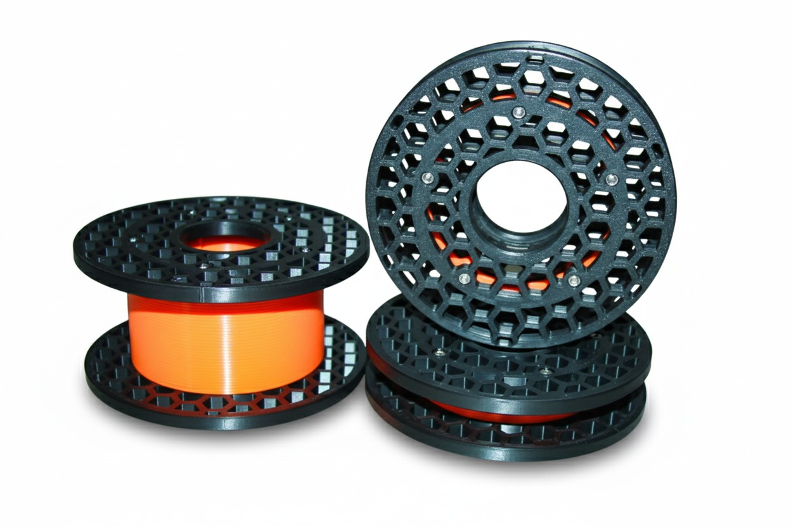

Mini spools designed for storing leftover filament and cables. I had tons of filament remnants at home and it felt wasteful to have large spools taking up space when the filament could be rewound onto something much smaller.
The design is compact yet robust enough to handle rough use. Available in two side plate sizes (40mm and 50mm diameter) with variable center widths from 15mm to 60mm, so you can pick the perfect size for your needs.
| Parameter | Value |
|---|---|
| Material | PLA / PETG / ASA (no limits) |
| Layer Height | 0.2 mm (optionally 0.3 mm) |
| Infill | 20% |
| Supports | No |
| Part | Print Time | Filament |
|---|---|---|
| Both side plates 40mm | 2h 50m | 24 m / 72 g |
| Both side plates 50mm | 3h | 25 m / 76 g |
| Center 15mm | 35m | 5 m / 14.6 g |
| Center 20mm | 44m | 6.5 m / 19 g |
| Center 25mm | 55m | 7.5 m / 23 g |
| Center 30mm | 1h 4m | 9 m / 27 g |
| Center 35mm | 1h 14m | 10.5 m / 31.2 g |
| Center 40mm | 1h 24m | 11.5 m / 35.3 g |
| Center 45mm | 1h 33m | 13 m / 39.3 g |
| Center 50mm | 1h 43m | 14.5 m / 44 g |
| Center 60mm | 2h | 17 m / 52 g |
Each spool requires 5x M3 nuts (DIN 934) and 5x M3 socket head cap screws (DIN 912). Screw length depends on center width:
| Center Width | Screw (DIN 912 M3) | Nuts (DIN 934 M3) |
|---|---|---|
| 15 mm | M3 x 25 mm | 5 pcs |
| 20 mm | M3 x 30 mm | 5 pcs |
| 25 mm | M3 x 35 mm | 5 pcs |
| 30 mm | M3 x 40 mm | 5 pcs |
| 35 mm | M3 x 45 mm | 5 pcs |
| 40 mm | M3 x 50 mm | 5 pcs |
| 45 mm | M3 x 55 mm | 5 pcs |
| 50 mm | M3 x 60 mm | 5 pcs |
| 60 mm | M3 x 70 mm | 5 pcs |
Fitting the center pieces into the side plates wasn't as simple as expected. I wanted to keep the grooves as tight as possible to avoid slop, which meant several iterations to get the fit just right. Even with such simple parts, precision matters.
The grooves in the side plates for the center piece were too tight or too loose depending on printer calibration and material shrinkage.
Multiple test prints with incremental adjustments to the groove width until achieving a snug but smooth fit across different materials.